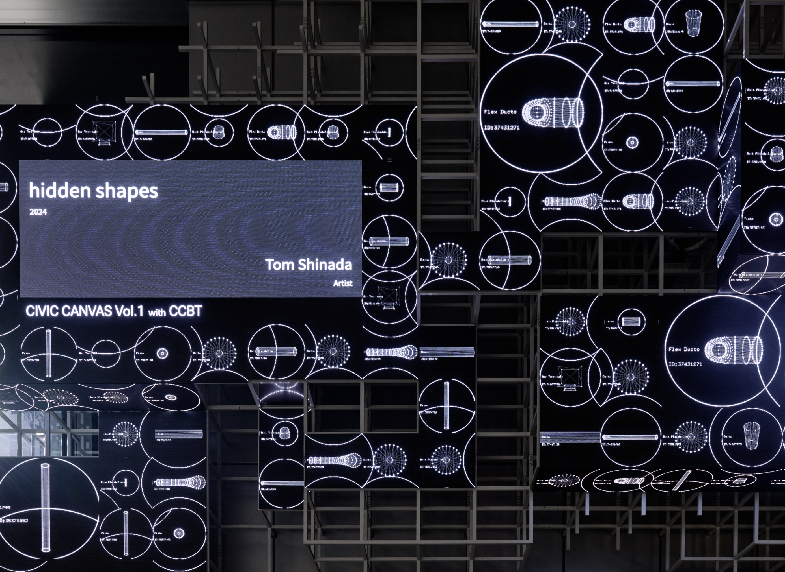

Hidden Shapes

photo by flowplateaux

CCBT主催のWS, CIVIC CREATIVE CANVAS での作品の制作、発表を行なった。普段は不可視な建築のエレメントが持つ「隠された形」を映像として再構成し、人々の触れられる建築のファサードに映し出す。（全30秒）
場所：INTER-SQUARE (Shibuya Sakura Stage内)のLEDビジョン全4箇所
We created and presented a work at the CIVIC CREATIVE CANVAS workshop hosted by CCBT. We reconstructed the "hidden shapes" of normally invisible architectural elements as video, and projected them onto the facade of a building that people can interact with. (30 seconds in total)
Location: All 4 LED vision screens at INTER-SQUARE (within Shibuya Sakura Stage)
Your unnoticed support systems
どんなに巨大な建設物も、一つ一つ美学を持って形作られた小さな部品でできている。仮囲いの中では、それらが何千ものボルトによって職人の手で締められていく。一般の人々は、そのプロセスにほとんど目を向けることなく、完成品としての建物に身を預ける。
しかし私たちに絶えず新鮮な空気と水を供給しているのは、隠された無数のダクトたちである。
Even the most massive structures are made up of small components, each shaped with its own aesthetic. Within temporary enclosures, these are fastened together by craftsmen's hands with thousands of bolts. The general public entrusts themselves to the building as a finished product, hardly paying attention to this process.
However, it is the hidden multitude of ducts that constantly supply us with fresh air and water.
Your unnoticed support systems
この作品では、そうした建築のブラックボックスに光をあてるツールとしてBIMデータを捉えた。特に人々の循環系と強く関与し且つ表に現れない設備配管に注目して部材データを抽出し、それらの「隠された形」をシルエットのわかりやすい表現で可視化し、ファサードのパターンとして成立するよう構成した。
This work uses BIM data as a tool to shed light on such architectural black boxes. We focused on extracting component data for equipment piping that is strongly involved in people's circulatory systems yet doesn't appear on the surface. We visualized these "hidden shapes" with easy-to-understand silhouettes and composed them to form patterns on the facade.